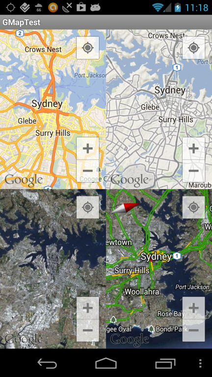
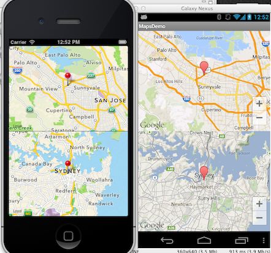
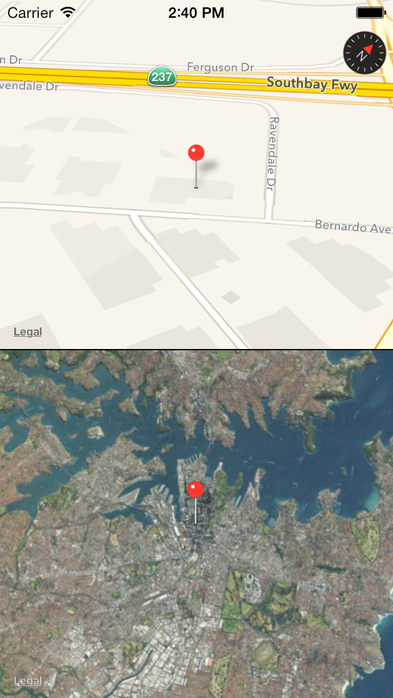

Geolocation and Mapping
Titanium Certified Developer (TCD) Training
In this lesson, you will:
- Learn to use GPS positioning in your applications
- Use forward and reverse geo-coding
- Integrate native maps
- Use custom map annotations
 Topic
Topic
Geolocation
Overview
Location APIs can be used for everything from device positioning to augmented reality applications. Taking location into account is mobile's killer feature.

Geolocation Support in Titanium
Detect if geolocation support is available
Obtain once or continually monitor the user's location
Device Compass (if available)
Forward and reverse geo-coding
iOS Geolocation

Must set Ti.Geolocation.purpose
Check for authorization before using
Primary configuration: Ti.Geolocation.accuracy property (e.g. ACCURACY_BEST)
Also Ti.Geolocation.distanceFilter
Based on those, iOS chooses provider and tunings
Android Geolocation
Pre Ti2.0, Android followed the iOS model & methods
Ti2.0 adds specific Android features
Legacy, Simple, and Manual modes
Simple: enable with accuracy = ACCURACY_HIGH or ACCURACY_LOW
Manual: More control, more precision, more provider options
Mobile Web Geolocation
Browser must support W3C Geolocation spec
Implementation & accuracy varies
User must grant permission
But, you can't change the message
Geolocation Gotchas
Continually monitoring GPS drains battery faster
Android emulator: GPS might not be enabled
Edit the AVD to add GPS support
Android emulator: no default location
Use DDMS to send location
iOS / Mobile Web Geo Demo
- iOS: Kitchen Sink — Phone > Geolocation
- Mobile Web: Kitchen Sink — Phone > Geolocation
Android Geo Demo
- Project: https://github.com/appcelerator-training/AndroidGeo
- Runs on device (not emulator)
- Shows Legacy, Simple & Manual modes
Topic
Maps and Annotations
Native Map Kits

Native maps provide zooming, scrolling, and different display types
Points of interest are added with Annotations (pins)
Support for drawing routes (iOS and Android)
Can choose center point and initial display range
Annotations

Annotations can be added on or after creation
Can customize:
- Pin image/color
- Title/Subtitle
- Right/Left Button
Can individually update pins, all are set at the same time
Adding Maps
- Mobile Web, Tizen, BB10 — use built-in Ti.Map component
- iOS & Android — use add-on module
- Download from Marketplace or https://github.com/appcelerator-modules/ti.map
- Module adds new functionality
- iOS: no map key or setup required
- Android: API key and some setup required
Android Mapping
- Version 2 Google Maps API key required
unless you happen to have an API v1 key already - Must use API key to see tiles on device / in production
- Either add with the <Module> tag in the View XML or create in the controller
- Annotations have to be added in the controller
iOS/Android Maps Solution
- Add module to tiapp.xml
- Enable module in alloy.js
- Define map in XML
- Style map in TSS
- Add annotations and set platform-specifics in controller
Maps Example
tiapp.xml changes
- First, download the modules and install
- Add module support
- For Android, configure permissions and API key (later slide)
<modules>
<module platform="iphone">ti.map</module>
<module platform="android">ti.map</module>
</modules>
Alloy.js
// Require module, and make it available throughout your app
Alloy.Globals.Map = require('ti.map');
Maps View
<<Alloy>
<Window class='container' id="win">
<View id="map" ns="Alloy.Globals.Map"></View>
<View id="dividerLine"/>
<View id="map1" ns="Alloy.Globals.Map"></View>
</Window>
</Alloy>
Associated TSS file
"#map": {
userLocation: false,
animate: true,
height: '50%',
top: 0,
region: { latitude: 37.38, latitudeDelta: 0.2,
longitude: -122.05, longitudeDelta: 0.2 }
},
"#map1": {
userLocation: false,
animate: true,
height: '50%',
top: '50%',
region: {latitude: -33.87365, longitude: 151.20689,
latitudeDelta: 0.1, longitudeDelta: 0.1 }
}
Associated Controller
// add some annotations, must be done in code
var anno1 = Alloy.Globals.Map.createAnnotation({
title:"Mountain View",
latitude:37.389569,
longitude:-122.050212
});
$.map.addAnnotation(anno1);
var anno2 = Alloy.Globals.Map.createAnnotation({
title:"Sydney",
latitude: -33.87365,
longitude: 151.20689
});
$.map1.addAnnotation(anno2);
$.win.open();
Topic
Android Specifics
Android Maps: General Procedure
- Obtain an API key from Google
- Update tiapp.xml with that key
- Enable module in tiapp.xml
- Require the module in JavaScript
- Instantiate & style your map in JavaScript
Obtaining an API key
- Get your app's SHA-1 fingerprint
- Visit Google's API console
- Click Create Project or select project name, click Create
- turn on Google Maps Android API v2
- Click API Access, then click Create New Android Key
- Paste your SHA-1 fingerprint, a semicolon, then your app's App ID
- Save the resulting "Key for Android Apps (with certificates)"
Update tiapp.xml
- Download module from Marketplace, and install
- Copy sample XML from the docs into your tiapp.xml
- Edit the three highlighted locations
Topic
iOS Specifics
iOS Notes
- No API key needed
- New 3D perspective
- Panning past 180/-180° longitude now supported
- New overlay rendering and placement options
- Additional properties (e.g. tintColor)
Camera View
Add static or animated "camera" to enable 3D perspective
- altitude: meters above surface
- centerCoordinate: camera position
- heading: camera aiming, relative to true north
- pitch: viewing angle (0 straight down)
// add the iOS7-specific camera view
if(OS_IOS && parseInt(Ti.Platform.version, 10)>=7) {
var cam = Alloy.Globals.Map.createCamera({
altitude: 300,
centerCoordinate: {
latitude:37.389569,
longitude:-122.050212
},
heading: -45,
pitch: 60,
showsBuildings: true
});
var animCam = function(){
$.map.removeEventListener('complete', animCam);
$.map.animateCamera({
camera: cam,
curve: Ti.UI.ANIMATION_CURVE_EASE_IN,
duration: 500
});
};
$.map.addEventListener('complete', animCam);
}
Maps Demo
Summary
In this lesson, you:
- Learned to use GPS positioning in your applications
- Used forward and reverse geo-coding
- Integrated native maps
- Used custom map annotations
Q&A
Lab Objectives
In this lab, you will:
- Determine the user's location when they capture a fugitive
- Save the latitude/longitude to the model for later retrieval
- Plot the capture location on a map
Lab: wiki.appcelerator.org/display/td/10.+Geolocation+and+Mapping
Solution Walkthrough